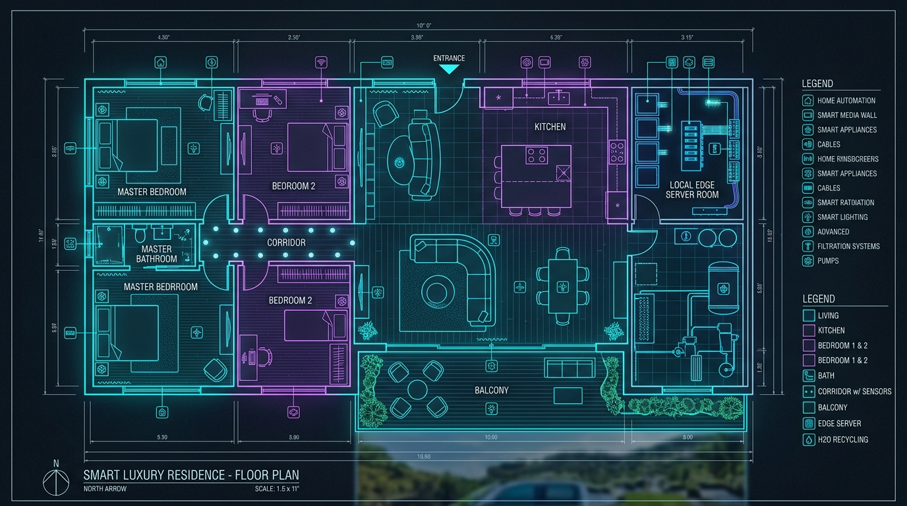

Kuşbakışı Kat Planı & Mobil Telefon Simülatörü
NVIDIA NIM Yapay Zekası, NeMo Guardrails Güvenliği ve NILM Akım Analizi
Mimari Kat Planı (Zirve Görsel İkiz)
Canlı Senkronize
Mobil Telefon Uygulaması Demo
Canlı SenkronizeGenişletilmiş Akıllı Beyaz Eşya Kataloğu
Samsung SmartThings, LG ThinQ ve Vestel Open-API ile bağlanan tüm akıllı ev eşyaları.
Bağlı Beyaz Eşyaların Anlık Durumu
Durum: Beklemede. NILM sensörü panodan akımı izliyor.
Durum: Eko Yıkama Hazır. Yıkama bitince 55°C su eşanjörden geçecek.
Durum: Eko Yıkama Hazır (1400 Devir). Yarı-gri su T2 tankına akar.
Durum: Beklemede. Isı pompalı düşük enerji modu aktif.
Durum: Su Sıcaklığı Hazır. Taze kahve çekirdeği dolu.
Durum: Şarj İstasyonunda (%100 Dolu). Otonom harita hazır.
Cihaz Güvenliği & Otonomi
Tüm cihazlar panodaki NILM AI akım sensörü, Vocal Guard sesli güvenlik sistemi ve NVIDIA NeMo Guardrails tarafından denetlenmektedir.
BiyoKalp Su Arıtma & Haşlanma Emniyetli Akıllı Sebil
88°C aşırı sıcak su tehlikesine karşı **75°C İdeal İçim Sıcaklığı** ve **Termos Kupa Algılama Emniyet Sensörü** ile yenilenmiş sebil.
Mutfak Akıllı İçme Suyu Sebili
Termos Kupa Sensörlü (Emniyetli)Sebilden Su İçme Seçenekleri:
BiyoKalp 4-Tank Arıtma Mimarisi
Duş, küvet ve lavabodan gelen hafif kirli su toplanır.
Çamaşır ve bulaşık makinesinden gelen deterjanlı su toplanır.
Şüpheli yıkama suları sensör risk analizine tabi tutulur.
Rezervuara, bahçeye ve Mutfak Akıllı Sebiline aktarılır.
Projeyi Zirveye Taşıyan 3 Devrimsel İnovasyon
Antigravity AI (Geliştirici Asistan) tarafından projeye özel olarak akıl edilmiş ve geliştirilmiş 3 temel inovasyon katmanı.
1. NILM AI (Tek Noktadan Akım Analizi)
Antigravity AI İnovasyonuNedir & Nasıl Çalışır? Her prize pahalı akıllı priz takmak yerine, ana elektrik panosuna bağlanan **tek bir akım sensörü (CT Klempi)** tüm evin elektrik dalga boyunu ölçer. Yapay zeka, cihazları "elektrik parmak izinden" tanır.
2. Kapalı Devre Su-Isı Eşanjörü
Antigravity AI İnovasyonuNedir & Nasıl Çalışır? Bulaşık makinesinden çıkan 55°C sıcaklıktaki kirli su dökülmeden önce **plakalı ısı eşanjöründen** geçer. Sıcaklık, alttan ısıtma tesisatındaki soğuk suya aktarılır.
3. Vocal Guard (Sesli Acil Durum Protokolü)
Antigravity AI İnovasyonuNedir & Nasıl Çalışır? Mutfak sensörü duman algıladığında hoparlörlerden sesli insan uyarısı verir: **"UYARI! Mutfak fırınında duman algılandı. Elektrik kesiliyor!"**. Aynı anda fırın elektriğini keser ve mutfak kapısını açar.
NVIDIA NIM & NeMo Guardrails Güçlü Yerel Sunucu AI
build.nvidia.com altyapısıyla canlı bağlı çalışan endüstriyel standartta yapay zeka asistanı.
Çalışan Model: meta/llama-3.2-11b-vision-instruct | Güvenlik: NVIDIA NeMo Guardrails
Akıllı Ev Sunucusu Önerileri
NVIDIA NIM ÖnerileriTüm fiziksel cihaz komutları denetlendi. Halüsinasyon riski: %0.0. Güvenlik duvarı aktif.
Panodaki tek sensör fırın ve çamaşır makinesi dalga boyunu algıladı.
NVIDIA Destekli Canlı Asistan Sohbeti
GÜNCEL DURUM: %100 TAMAMLANDI (NVIDIA NIM DESTEKLİ ZİRVE SÜRÜM)
Fazlar Halinde Tüm Katmanlar (Faz 1 - Faz 5) Tamamlandı + Faz 6 Gelecek Vizyonu Eklendi
Kat Planı & Arayüz
Oda otonomisi, kuşbakışı kat planı, motorlu kapılar ve iklimlendirme.
Matematik & Jüri Rehberi
Isı transferi (MPC), Oyun Teorisi pazarlığı ve kütle dengesi hesap notları.
NVIDIA NIM Backend
Python MQTT backend (`server_backend.py`), NVIDIA NIM API ve NeMo Guardrails.
Maket Ev & ESP32
500-1000 TL maket ev rehberi (`MAKET_EV_VE_DONANIM_REHBERI.md`) ve C++ donanım kodu.
3 Devrimsel İnovasyon
NILM AI, Eşanjör ve Vocal Guard. (Antigravity AI İnovasyonları)
MIT Kazanırsak Hedefler
1:1 Living Lab, Kuantum Kriptografi, 60GHz Biyometrik Radar ve Omniverse 3D CFD.
FAZ 6: MIT Kazanılırsa Hayata Geçirilecek Büyük Hedefler (Living Lab)
Akademik Gelecek VizyonuKarton/Akrilik maketten çıkıp MIT kampüsünde gerçek 1:1 ölçekli deneysel bir yaşam laboratuvarı kurmak.
Kuantum bilgisayarların kıramayacağı Kyber/Dilithium algoritmalarıyla ev içi sensör şifrelemesi.
Kamerasız temassız mikrometre radar ile uyku apnesi, kalp ritmi ve stres seviyesi takibi.
Evin termal hava akımını ve CFD dinamiklerini ray tracing ile 3 boyutlu simüle etmek.
🚀 Yakında Eklenecek Özellikler (Gelecek Güncelleme Yol Haritası)
Sistemin bir sonraki sürümünde aktif edilecek, yaşam kalitesini ve hayati güvenliği artıran 2 yeni vizyoner özellik.
1. Romantik Mod (Akıllı Ambiyans Senaryosu)
Yakında EklenecekAmaç: Evin sirkadiyen ışıklarını ve müzik altyapısını tek bir komutla huzurlu, dinlendirici ve romantik bir akşam yemeği atmosferine büründürmek.
Tüm beyaz spotlar kapanır, sadece yemek masası ve tezgah üzerinde sıcak kehribar (2200K Mum Işığı) loş ton açılır.
Hoparlörlerden yumuşak piyano/akustik lo-fi tınıları konuşmayı bölmeyecek düşük desibelde (%25 ses) otomatik başlar.
Koridor ışıkları gözü rahatsız etmeyecek %10 zemin rehber aydınlatmasına geçer; diğer odaların ışıkları tamamen söndürülür.
2. 112 Acil Sağlık & Otonom Kapı Protokolü
Hayat Kurtarma ProtokolüAmaç: Evde kaza, düşme, bayılma veya ani kalp krizi durumunda ambulans ekiplerinin kilitli kapılarda saniyeler kaybetmesini önleyerek hayatta kalma şansını en üst düzeye çıkarmak.
60GHz FMCW radar veya acil panik sensörü ani düşme veya hareketsizlik algıladığında otonom sağlık protokolü tetiklenir.
Sağlık görevlileri kapıda kalmasın diye: Bahçe kapısı, çelik dış giriş kapısı ve kaza olan odanın kapısı anında motorlu olarak ardına kadar açılır.
112 Acil Sağlık sistemine doğrudan dijital acil durum çağrısı açılarak tam adres, kapıların açık olduğu bilgisi ve düşme anı iletilir.